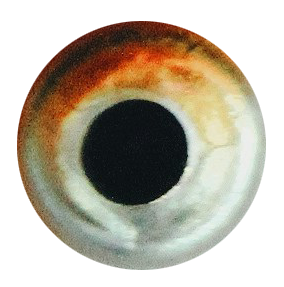
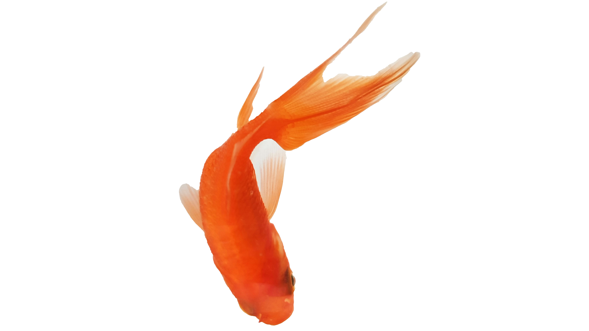

Animals are born, are sentient and are mortal. In these things they resemble
man.
In their superficial anatomy — in their habits, in their time, in their physical capacities, they differ
from man. They are both like and unlike. The animal can be tamed so that it supplies and works for the
peasant.
1. Berger, 2. Why Look at Animals, 1980.
Exclusion of Man
BUT ALWAYS ITS LACK OF COMMON LANGUAGE, ITS SILENCE, GUARANTEES ITS DISTANCE, ITS
DISTINCTNESS, ITS EXCLUSION, FROM AND OF A MAN.

THIS REDUCTION OF THE ANIMAL, WHICH HAS A THEORETICAL AS WELL AS ECONOMIC HISTORY, IS
PART OF THE SAME PROCESS AS THAT BY WHICH MEN HAVE BEEN REDUCED TO ISOLATED PRODUCTIVE AND CONSUMING
UNITS.
2. Berger, 3-4. Why Look at Animals, 1980. 3. Berger, 11. Why
Look at Animals, 1980.
DIALOGUE 1
THAT FISH LOOKS SO SILLY,
I BET IT'S NOT THAT SMART
THEY DON'T SEEM LIKE THEY CAN
HOLD A LOT OF MEMORIES, THEY PROBABLY CAN
ONLY REMEMBER 3 SECONDS
IMAGE TAKEN 1970 LOCATION: UNKNOWN MEDIUM: POLAROID
ALL ANIMALS APPEAR LIKE FISH SEEN THROUGH THE PLATE OF GLASS OF AN
AQUARIUM.
Animals are always the observed. The fact that they can observe us has lost all significance. They are
objects to our ever-extending knowledge. What we know about them is an index of our power, and thus an
index of what separates us from them. The more we know, the further away they are.
4. Berger, 14. Why Look at Animals, 1980.
Chapter 2
DIMINISH
DIALOGUE 2
WHEN WAS THE LAST TIME
YOU TALKED TO HIM?
I DON’T KNOW, CAN’T
REMEMBER,
WHAT CAN I SAY, I HAVE A MEMORY OF A GOLDFISH
IMAGE TAKEN 1980 LOCATION: UNKNOWN MEDIUM: FILM
THESE ANIMALS HAVE BECOME PRISONERS OF A HUMAN/SOCIAL SITUATION INTO
WHICH THEY HAVE BEEN PRESSGANGED
The capturing of animals was a symbolic representation of the conquest of all distant and exotic lands.
5. Berger, 17. Why Look at Animals, 1980. 6. Berger, 19. Why Look at
Animals, 1980.
DIALOGUE 3
Hello dear, hopefully you got my last letter. How is your trip going?
Please
be safe, we all miss you very much. Do you still remember what I asked for from your trip? I doubt
it with your goldfish memory.
Sincerely, Your mother
WRITTEN IN 1990 LOCATION: UNKNOWN MEDIUM: LETTER
Chapter 3
CHANGE IN KNOWLEDGE
DIALOGUE 5
WHAT ARE THE REQUIREMENTS
FOR THE ASSIGNMENT? I DIDN’T ATTEND CLASS TODAY.
I DIDN’T GO EITHER, BUT I
REMEMBER THE DETAILS OF THE ASSESSMENTS ARE IN THE SUBMISSION BOX, BUT IT IS QUITE AN EXTENSIVE
LIST, IT INCLUDES... (GOES INTO SPECIFIC DETAILS)
YOU REMEMBERED ALL THAT?
YOUR MEMORIES ARE LIKE A GOLDFISH!
IMAGE TAKEN 2015 LOCATION: UNKNOWN MEDIUM: FILM
In the zoo the view is always wrong. Like an image out of focus.

The zoos, with their theatrical décor for display, were in fact demonstrations of how
animals had been rendered absolutely marginal.
DIALOGUE 6
I DON’T EVEN REMEMBER HOW TO
COME HOME EARLIER, HOW AM I SUPPOSED TO REMEMBER WHAT I ATE LAST NIGHT?
YOU NEED TO TRAIN YOU MEMORIES
TO BE MORE LIKE GOLDFISHES
YOU’RE RIGHT, I WISH I HAVE
MEMORIES LIKE A GOLDFISH
IMAGE TAKEN 2020 LOCATION: UNKNOWN MEDIUM: FILM
DIALOGUE 7
I WONDER WHY GOLDFISHES WERE THOUGHT TO BE STUPID IN THE FIRST PLACE DECADES AGO?
WASN’T IT BECAUSE THEY LOOKED STUPID TO US? HOW PREJUDICE OF US TO ASSUME THROUGH APPEARANCES OF A FISH.
IMAGE TAKEN 2025 LOCATION: UNKNOWN MEDIUM: FILM
Goldfish Memory
DO YOU REMEMBER THE CODE?
GOLDFISH MEMORY MAKE BELIEVE ENCOUNTERS WITH MISINFORMATION
QUOTES CHOSEN FROM WHY LOOK AT ANIMALS WRITTEN BY JOHN BERGER, 1980
FUTURE COMMUNICATION TAUGHT BY URIAH GRAY WEBSITE CREATED BY MAXINE LIANG,
2025